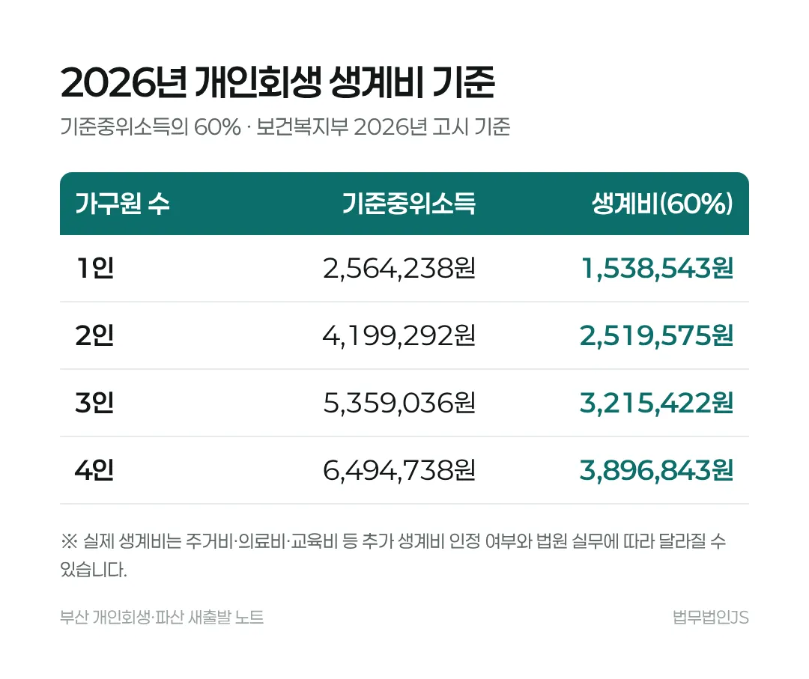

2026년 생계비가 오르면 개인회생 변제금은 얼마나 줄어드나요?
같은 소득이라면 매달 갚는 돈이 줄어듭니다. 1인 가구 기준 생계비가 한 달 약 10만 원 올라, 36개월이면 약 370만 원을 덜 갚는 셈입니다.
3줄 요약
- 개인회생 월 변제금은 월 소득에서 법원이 인정하는 생계비를 뺀 금액입니다.
- 생계비는 실무상 보건복지부가 정하는 기준중위소득의 60%를 기본으로 하므로, 2026년 기준이 오르면서 변제금도 낮아집니다.
- 재산이 많으면 그만큼은 갚아야 하고(청산가치 보장), 주거비·의료비 등 추가 생계비는 서류에 따라 달라집니다.
기한과 숫자
변제금은 어떻게 정해지나요?
월 변제금은 월 소득(세금·보험료를 뺀 금액) − 법원이 인정하는 생계비입니다. 생계비는 기준중위소득의 60%를 기본으로 하므로, 이 기준이 오르면 같은 소득에서도 남는 돈, 곧 변제금이 줄어듭니다(채무자 회생 및 파산에 관한 법률 제579조 제4호).

실제 숫자로 보면 얼마인가요?
혼자 사는 직장인이 월 250만 원을 받고 카드론·대출이 6,000만 원인 경우를 예로 듭니다.
| 항목 | 금액 |
|---|---|
| 2026년 1인 생계비 | 1,538,543원 |
| 월 변제금 | 약 96만 원 |
| 36개월 총 변제액 | 약 3,461만 원 |
| 줄어드는 금액 | 약 2,539만 원 (원금의 약 42%) |
2025년 1인 생계비는 약 143만 원이었습니다. 같은 250만 원을 받아도 2026년에는 한 달 약 10만 원을 덜 냅니다. 숫자는 이해를 돕기 위한 계산이며 실제 변제금은 법원이 정합니다.
부양가족이 있으면 어떻게 달라지나요?
가구원 수가 늘면 생계비 기준이 올라 변제금이 낮아집니다. 2026년 2인 가구 기준은 2,519,575원, 3인 3,215,422원, 4인 3,896,843원입니다. 부양가족이 몇 명으로 인정되느냐가 변제금을 크게 좌우합니다.
재산이 있으면 무엇이 달라지나요?
예금, 보험 해지환급금, 자동차, 임차보증금을 합한 금액보다 총 변제액이 적으면 인가를 받기 어렵습니다. 이를 청산가치 보장이라고 하며, 재산이 많으면 그만큼은 갚아야 합니다(같은 법 제614조).
자주 묻는 질문
작년에 계산해 본 변제금이 그대로인가요?
2026년 생계비 기준이 올라 같은 소득이라도 변제금이 낮아질 수 있습니다. 다시 계산해 보는 것이 좋습니다.
월세가 높으면 생계비를 더 인정받을 수 있나요?
주거비·의료비·교육비 등은 서류로 소명하면 추가 생계비로 인정받는 경우가 있습니다. 인정 여부는 법원이 판단합니다.
변제 기간은 꼭 3년인가요?
원칙은 3년이며, 청산가치 보장 등 특별한 사정이 있으면 5년까지 정할 수 있습니다.
근거 법령과 판례
- 채무자 회생 및 파산에 관한 법률 제579조가용소득과 생계비
- 채무자 회생 및 파산에 관한 법률 제611조변제계획과 변제 기간
- 채무자 회생 및 파산에 관한 법률 제614조인가 요건(청산가치 보장)
- 관련 글소득 없는 주부도 개인회생을 할 수 있나요?
일반적인 법률 정보이며 개별 사건에 대한 법률 의견이 아닙니다. 구체적인 결론은 소득, 재산, 채무에 따라 법원이 정합니다. 법무법인JS 광고 · 광고책임변호사 최원진